The transition toward a decarbonized global economy has catalyzed an unprecedented demand for utility-scale Battery Energy Storage Systems (BESS), which serve as critical infrastructure for stabilizing renewable energy grids. As these systems move from specialized niche applications to the cornerstone of national energy strategies, the logistics frameworks required to transport them have encountered significant hurdles.
These challenges are not merely matters of transportation volume but are deeply rooted in the physical mass of the units, the volatile chemical nature of lithium-ion technology, and a complex, often fragmented, international regulatory environment. The logistics of BESS containers represent a unique intersection of heavy-lift engineering and hazardous materials management, where the stakes involve not only multi-million-dollar capital investments but also the safety of global maritime and terrestrial transport corridors.
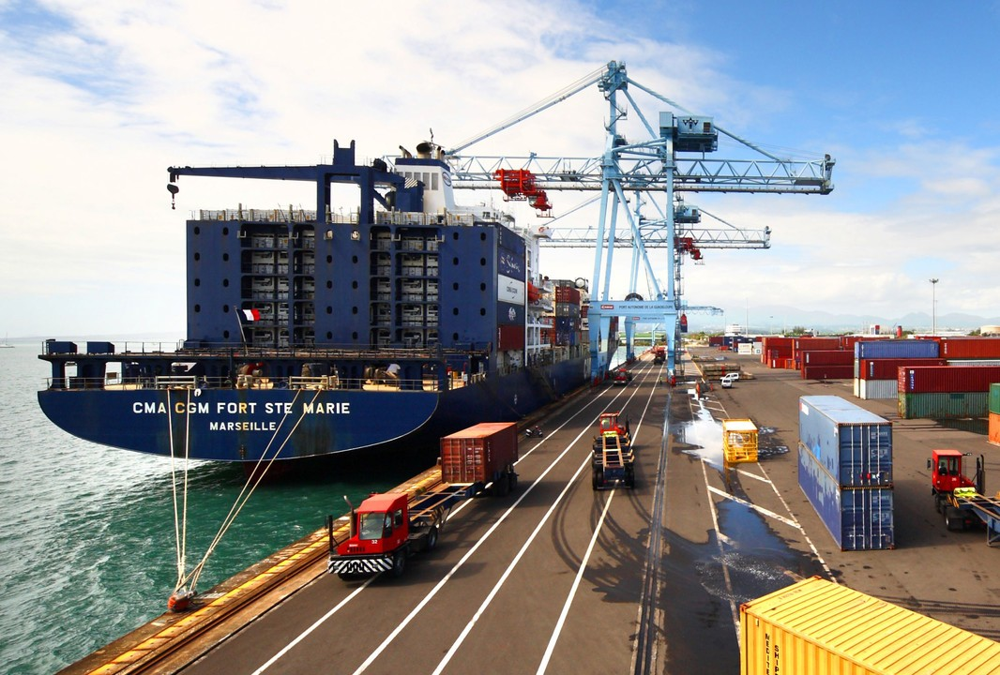
The Evolution of BESS Architecture and Physical Constraints
Modern BESS units are typically engineered as fully integrated, self-contained systems housed within specialized ISO shipping containers. These units have evolved from simple battery racks into sophisticated technological ecosystems containing battery modules, Battery Management Systems (BMS), Power Conversion Systems (PCS), thermal management (HVAC) units, and integrated fire suppression. This integration, while beneficial for site installation speed, creates a logistical profile characterized by extreme density and non-uniform weight distribution.
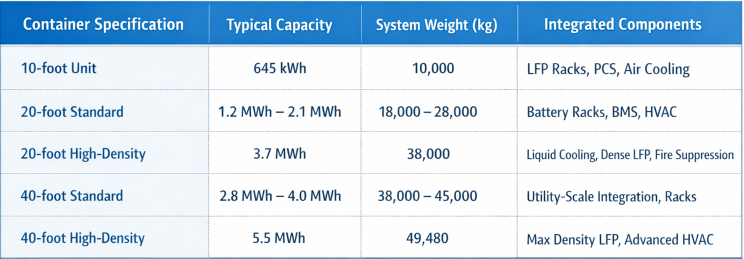
The physical weight of these units creates a weight bottleneck that begins at the manufacturing plant and persists through every segment of the supply chain. Because internal components such as inverters and cooling systems are positioned for functional efficiency rather than center-of-gravity optimization, the load center is often offset. This asymmetry requires specialized rigging and lifting procedures. Lifting points on the container frame must be manufacturer-approved, as utilizing unapproved areas can lead to frame warping, which in turn causes the misalignment of internal battery racks or delicate electronic connections.
Mechanical Stress and Vibration Mitigation in Transit
The transit environment is inherently hostile to the delicate electronics and high-energy cells within a BESS. Mechanical stress in the form of vibration and shock loads is a primary cause of latent damage that may not manifest until the system is energized on-site. During road transport, the steady-state vibration of truck engines and road irregularities can cause mechanical fatigue in wiring harnesses and terminal connections. At sea, the low-frequency, high-amplitude vibrations of large vessel engines, coupled with the swaying motions (roll, pitch, and yaw), can place immense stress on the internal mounting structures.
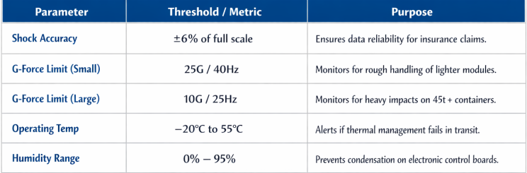
To mitigate these risks, logistics providers employ vibration-dampening mounts and specialized blocking to protect the BESS during the Main Carriage phase of its journey. Furthermore, the use of high-precision impact recorders has become an industry standard for high-value BESS shipments. These sensors, such as the enDAQ or g-View series, monitor acceleration across three axes to ensure that the unit has not been subjected to forces exceeding its design limits.
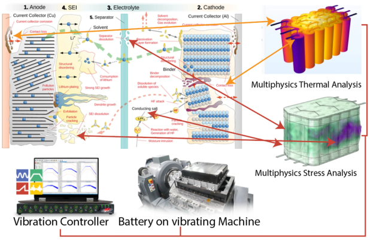
Thermal Runaway and Chemical Safety Risks
The defining logistical challenge for BESS is the risk of thermal runaway. This phenomenon occurs when a lithium-ion cell reaches a critical temperature threshold, triggering a self-sustaining exothermic reaction that rapidly spreads to adjacent cells. The thermal threshold varies by chemistry, with Nickel Manganese Cobalt (NMC) cells often entering runaway at approximately 130ºC, while Lithium Iron Phosphate (LFP) cells—the most common for BESS—are more stable, with thresholds closer to 250ºC.
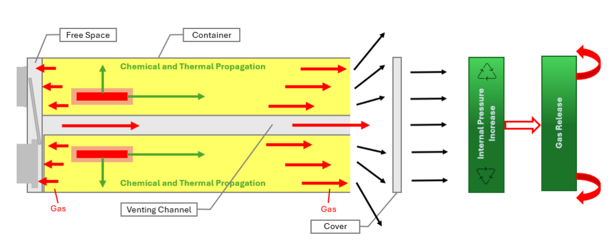
Once initiated, a BESS fire is distinct from traditional cargo fires in several ways:
- Oxygen Independence: Lithium battery fires generate their own oxygen through the decomposition of the cathode material, meaning they cannot be smothered by traditional fire-extinguishing gases like CO2.
- Toxic Gas Release: Failed units vent a volatile mixture of gases, including Hydrogen H2, Carbon Monoxide (CO), and Methane (CH4), which can accumulate in enclosed spaces (like a ships hold) to create a high risk of vapor cloud explosions.
- Re-ignition Potential: Even after a fire appears to be extinguished, the residual heat within the dense battery racks can cause the fire to re-ignite hours or even days later.
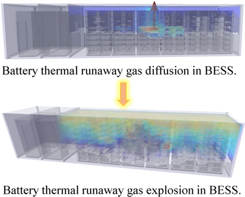
These risks necessitate strict adherence to temperature control and State of Charge (SoC) management during the logistical cycle. High ambient temperatures can decrease the safety margin for thermal runaway, while freezing temperatures can cause the electrolyte to crystallize, leading to permanent performance degradation or internal shorts. Maintaining a stable temperature between 20ºC and 25ºC is ideal for maximizing safety and performance.
The Regulatory Labyrinth: UN 3536 and IMDG Classification
The international transport of BESS is governed by a strict regulatory framework that classifies these units as Dangerous Goods. Under the International Maritime Dangerous Goods (IMDG) Code and the United States Department of Transportation (DOT) regulations, containerized BESS are classified as Class 9 hazardous materials under the United Nations number UN 3536.
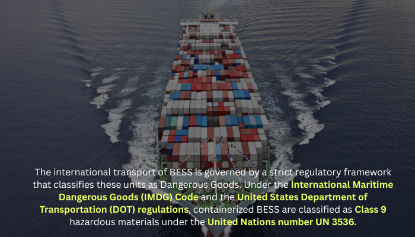
UN 3536 refers specifically to Lithium batteries installed in cargo transport units, which encompasses the battery banks, the integrated management systems, and the fire suppression/HVAC components. This classification carries several critical logistical requirements:
- Secure Attachment: Batteries must be securely fastened to the interior structure of the container (racks, cabinets) to prevent movement relative to the container during the shocks, loadings, and vibrations normally incident to transport.
- Ancillary Equipment: Only hazardous materials necessary for the operation of the BESS (e.g., fire extinguishing chemicals) may be present in the container.
- UN 38.3 Certification: Every battery type within the unit must have passed the UN 38.3 test suite, which subjects' cells and modules to altitude simulation, thermal tests, vibration, shock, external short circuits, impact, overcharge, and forced discharge.
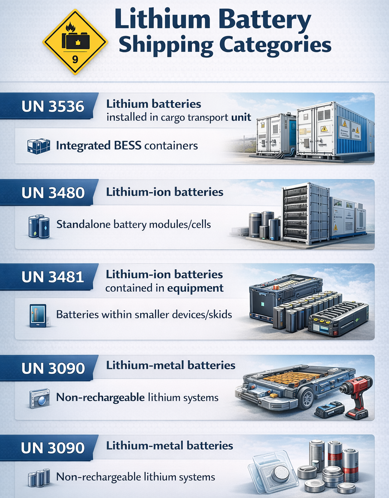
The regulatory environment is constantly evolving to keep pace with the increasing size and energy of BESS. For instance, as of January 2022, manufacturers must provide a standardized Battery Test Summary to all subsequent distributors in the supply chain to ensure traceability and compliance with UN 38.3 standards. Furthermore, starting in 2026, air transport regulations will mandate a maximum 30% State of Charge (SoC) for all lithium-ion battery shipments, including those packaged with devices, a rule that reflects the growing global concern over the energy density of hazardous cargo.
Maritime Logistics and the Challenge of Onboard Firefighting
The maritime phase of the BESS journey is particularly perilous due to the confined spaces of vessel holds and the limited resources available for firefighting at sea. A single BESS unit in thermal runaway can overwhelm a ship’s standard CO2 fire suppression system, as the batteries do not require external oxygen to burn. Furthermore, the application of water—the most effective cooling agent for battery fires—can lead to issues with vessel stability due to the free surface effect if large volumes of water accumulate in the hold.
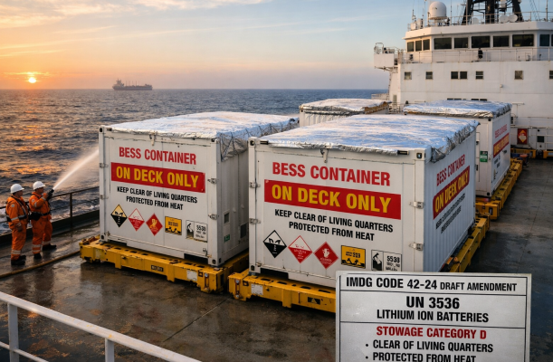
Because of these risks, there is a strong recommendation from organizations like the International Union of Marine Insurance (IUMI) and various national maritime authorities to stow BESS containers On Deck Only. On-deck stowage allows for the natural venting of toxic gases and provides the crew with better access for boundary cooling. Draft amendments to the IMDG Code (42-24) suggest moving UN 3536 from Stowage Category A (on or under deck) to Category D (on deck only), while also requiring that units be stowed clear of living quarters and protected from heat.
Road Transport: Infrastructure Hurdles and the 40-Ton Threshold
Once the BESS container reaches the destination port, the challenge shifts to the terrestrial infrastructure. In the United States, the primary logistical hurdle is the 80,000 lb (40 ton) weight limit for standard tractor-trailers on the interstate highway system. While a 20-foot BESS unit might remain under this limit, the newer 5 MWh 40-foot units weigh between 40,000 kg and 45,000 kg (up to 50 (U.S. tons).
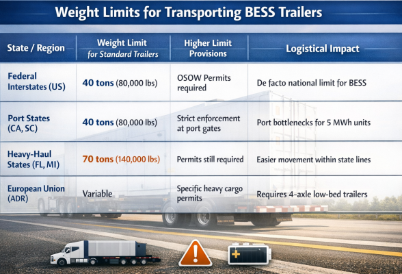
The patchwork of state-level regulations in the U.S. creates a scenario where there is often no clear corridor for moving high-capacity BESS from ports in California to high-demand regions like Texas or the Midwest. This infrastructure bottleneck is driving manufacturers to adapt by designing modular, stackable 20-foot units that weigh less than 36 tons each, thereby staying below the critical permitting threshold while still offering high energy density.
Supply Chain Volatility and Strategic Sourcing
The logistics of BESS are inextricably linked to a global supply chain that is currently experiencing significant volatility. The industry is characterized by a high degree of geographic concentration, with China controlling over 80% of the processing for battery-grade lithium hydroxide. This concentration creates strategic vulnerabilities; political instability, export restrictions, or shipping crises (such as port congestion or canal closures) can quickly derail global production timelines.
The price of raw materials—specifically lithium, nickel, cobalt, and graphite—has been subject to massive fluctuations. For instance, lithium prices surged by nearly 500% in the 2021-2022 period, while nickel spiked by 250% due to geopolitical tensions involving Russia, a major producer. These price spikes, combined with long shipping times from Asian manufacturing hubs to Western markets, make long-term cost planning for BESS projects extremely difficult.
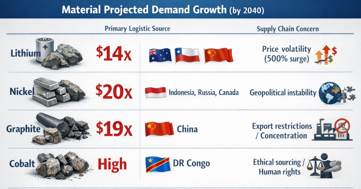
Insurance, Liability, and Contractual Risk Management
Given the high value and hazardous nature of BESS, risk management through insurance and contractual liability is a cornerstone of the logistical process. BESS projects represent significant capital investments—often tens of millions of dollars—and a single thermal runaway event can result in a total loss.
Insurance for BESS logistics typically includes:
- Cargo/Inland Marine Insurance: Covers physical damage to the units during transit, including rigging failures or road accidents.
- Operational Property Damage: Protects the assets once they are delivered to the site, covering fire, theft, and natural disasters.
- Business Interruption Insurance: Critical for utility-scale projects, this covers the loss of revenue resulting from the inability to operate the BESS due to a transit-related or commissioning-related incident.
- Third-Party Liability: Protects against claims for bodily injury or property damage caused by a BESS fire or toxic gas release, which is particularly important for installations located near residential or commercial areas.
Reverse Logistics: Decommissioning and the Circular Economy
The final frontier of BESS logistics is end-of-life (EOL) management. As the first wave of utility-scale storage begins to age, the industry must prepare for the complex task of decommissioning and recycling. This Reverse Logistics phase is as challenging as the initial delivery, requiring specialized labor and strategic oversight.
The decommissioning process involves:
- Safe Power-Down: Isolating all electrical sources and performing Lockout/Tagout (LOTO) procedures.
- De-energization: Safely drawing down the battery charge to a level suitable for transport.
- Rigging and Removal: Reversing the installation process, which often requires the same heavy cranes and multi-axle trailers used during the initial delivery.
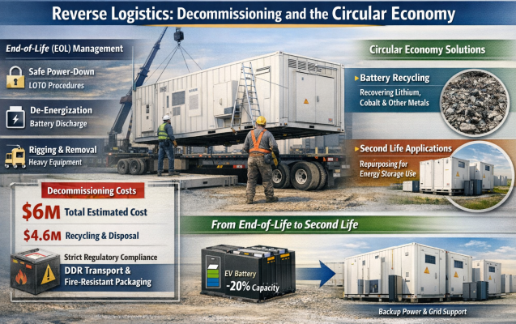
The cost of decommissioning is substantial. Estimates for a 120 MW BESS site suggest a total decommissioning cost of approximately $6 million, with $4.6 million dedicated specifically to material disposition and recycling. Furthermore, the transport of Damaged, Defective, or Non-Working batteries (DDR) is subject to even stricter regulations, often requiring specialized fire-resistant packaging (Special Provision 376) and direct coordination with hazardous waste recyclers.
The industry is moving toward a Circular Economy model, where EOL batteries are either recycled to recover critical minerals like lithium and cobalt or repurposed for Second Life applications. For example, EV batteries that have lost 20% of their capacity may be no longer suitable for vehicles but can still provide years of service in stationary energy storage for building backup or grid stabilization.
Strategic Recommendations for BESS Logistics Management
To navigate the multifaceted challenges of shipping BESS containers, stakeholders must move away from a "standard freight" mindset and toward a "project cargo" approach. This requires early-stage integration of logistics planning into the project lifecycle.
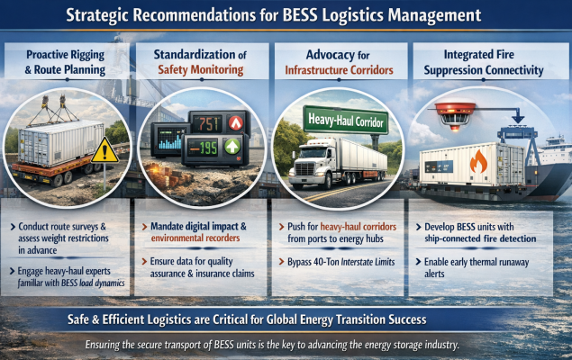
- Proactive Rigging and Route Planning: Developers should conduct route surveys and identify weight-restricted bridges and tight turns months before the cargo leaves the port. Engaging heavy-haulage experts who understand the non-uniform load centers of BESS is critical.
- Standardization of Safety Monitoring: The adoption of digital impact and environmental recorders should be mandatory for all high-capacity BESS shipments. This provides the data necessary for both quality assurance and insurance claim substantiation.
- Advocacy for Infrastructure Corridors: As BESS units continue to grow in weight, there is a clear need for policy advocacy to establish heavy-haul corridors from major ports to inland energy hubs, bypassing the 40-ton interstate limit.
- Integrated Fire Suppression Connectivity: Logistics providers and vessel operators should prioritize the development of BESS units with integrated fire detection systems that can be plugged in to a ship’s monitoring system, allowing for the early detection of thermal runaway during long maritime voyages.
The successful deployment of energy storage technology—and by extension, the success of the global energy transition—is contingent upon a robust, safe, and efficient logistics framework. As the industry matures, the ability to move these massive, energy-dense units across the globe without incident will be the primary metric of success for BESS project developers and logistics providers alike.